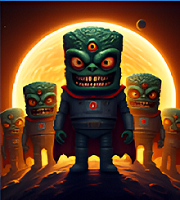
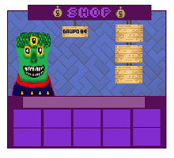
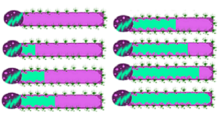

Diseño del Tetrimarciano Inspirado en una idea generada por IA. Diseñado con Pixil Art (creación pixelada).

Creación de la Tienda. Idea inicial: Tres tiendas separadas: Escenarios, Probabilidades de fichas, Compra de fichas nuevas.

Idea planteada al inicio del proyecto. Creada en Pixil Art, junto con la tienda y el Tetris marciano.